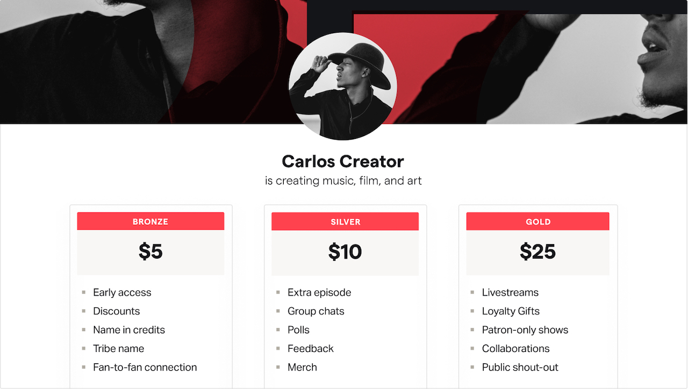

Change the way art is valued
Let your most passionate fans support your creative work via monthly membership.
Search the 200,000+ creators on Patreon
What's Patreon?
On Patreon, you can let your fans become active participants in the work they love by offering them a monthly membership. You give them access to exclusive content, community, and insight into your creative process. In exchange, you get the freedom to do your best work and the stability you need to build an independent creative career.
Develop a recurring income stream
Stop rolling the dice of ad revenue and per-stream payouts. Get recurring income through monthly payments from your patrons.

Writer
"The reliable monthly income has made it possible for me to spend less time chasing checks and more time creating."
Take back creative control
Create what you want and what your audience loves. You don’t have to conform to popular taste or the constraints of ad-based monetisation models.
Writer, comedian, commentator
"Twenty years into my career, I realise I’ve been scattering my creativity and energy, chasing the approval of algorithms or network executives."
Build a direct, meaningful connection with your audience
No ads, no trolls, no algorithms. Enjoy direct access and deeper conversations with the people who matter the most.

Juicy Scoop Podcast
"With Patreon, it’s not about likes and views, you can really connect with your fans, ignore the haters and focus on the positive. I’d rather have 300 patrons than 3 million Instagram followers."
Who uses Patreon?
If you’re ready to take your work to the next level and willing to open your heart to your audience, Patreon is for you.

It’s easier than you think
There are many ways to delight your fans and every creator does this in their own way.
See how other creators use Patreon
Is Patreon Right For You And Your Business?
In this article, we want to introduce you to the membership model—an effective, field-tested way for independent creators...
Read More
6 Membership-based Business Models You Can Use On Patreon Today
If you’ve looked at what other creators are doing on Patreon, it can be daunting to see how many different ways they leverage...
Read More
The 20 Most Useful Patreon Features & Integrations
As a creator, it's easy to feel like there just aren't enough hours in the day. Whether you’re working on your project part-time...
Read More